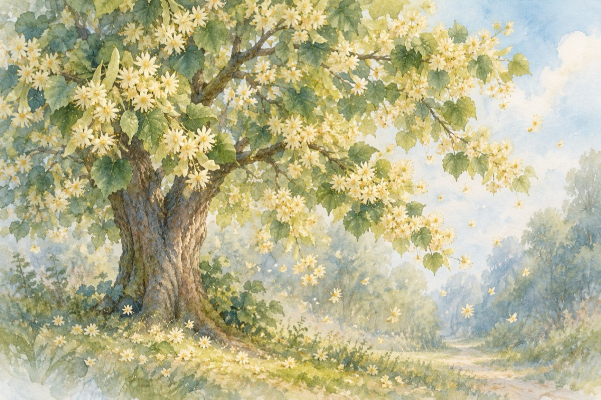

A câta oară
A câta oară, Doamne,
Mă-mbată parfumul Tău de tei?
De dragoste, iubire îmi este foame
De prima mea iubită, de ochii ei!
A câta oară, oare?
Năvalnicul parfum,
Din teiul dat în floare
Îmi iese-acum în drum?
A câta oară, Doamne, mă întorc
Acolo în pădurea mea de tei
De unde am plecat în viață cu noroc
Copilărie, vino la mine să mă iei!...
17 iunie 2016
IMAGINAȚIE
Decapitându-se călugăru-și mărturisi,
Propriului său corp
De care-abia se despărți,
Că a făcut-o cu un singur scop.
Să-i pedepsească poftele lumești,
Și-apucăturilor trupești necuvenite
Ce-aici în creier n-o să le găsești
Acestea fost-au ultimele lui cuvinte.
Și au urmat regrete, da, sau nu!...
Acolo-n lumea nefirească.
Speranțe cum ai da cu bani
Dacă vreodată, putea-vor să se regăsească!?
Cei doi care de fapt era doar unul,
S-au reîntregit cumva miraculos.
Și capul deveni din nou stăpânul,
Ce-a ridicat truditul corp de jos.
Moral sau imoral, făcutul gest,
A contradicțiilor din sinea sa
Cu siguranță-i o formă de protest
Forță de ce s-ar fi putut a se-ntâmpla.
Dovada că prin sacrificiu
Poți ca să faci oricare îndreptare,
Trecând prin vama cruntului supliciu,
Poți deveni prin căi imaginare
Un om, sau nu, cu alte începuturi
Călugărul ce-ar fi pățit, făr’ de-a păți,
Își duse palma peste frunte
Și credincioșilor la povești,
Această pildă, ce-ar fi putut să-l ducă în ispite!...
Vasile Groza